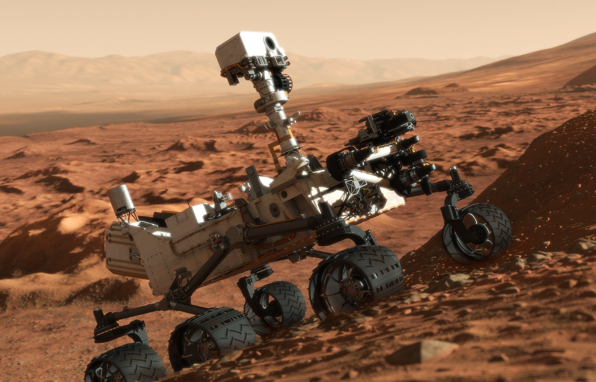
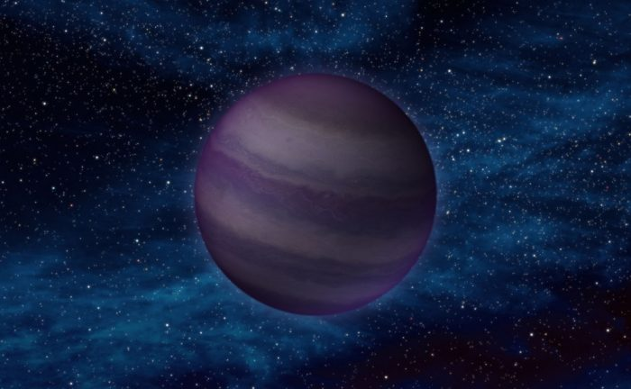
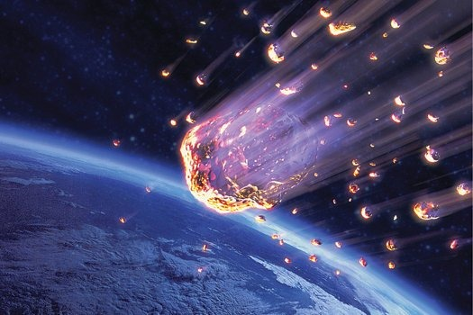

Marsjáró
A Curiosity 2011 novemberében indult a Földről és 2012. augusztus 6-án landolt a vörös bolygón, annak is az egyenlítője közelében, nagyjából 5 fokos déli szélességnél. Azóta a Gale-kráterben dolgozik, 2014-ben pedig elkezdte megmászni az annak közepén magasodó hegy, az Aeolis Mons (a NASA közleményeinek szóhasználatával: Mount Sharp) oldalát. A küldetése fő célját már teljesítette: vizsgálatai nyomán bebizonyosodott, hogy a területen valamikor hosszabb időn, évmilliókon át állóvíz volt. Így elvileg egyes életformák számára kedvező környezet, víz és megfelelő ásványi anyagok voltak jelen. A hegy oldalán felfelé kapaszkodva most a különböző időszakoknak megfelelő rétegek vizsgálatával azt kutatja, hogyan alakult a környezet a Mars története folyamán. A rover ezidáig mintegy 16 km-t gurult a Mars felszínén, miközben hosszabb-rövidebb időkre megállt a vizsgálatai elvégzéséhez.
Zorg72 az Intergalaktikus egyezségben
A mai napon a Zorg72 aláírta az Intergalaktikus egyezményt, így válva annak 12-ik tagjává. Zorg lakosai bizakodóak az így megnyíló új lehetőségekkel kapcsoltban.
Meteoreső várható
A Vulkán és Krok bolygó között meteorraj elvonulása várható. Az Intergalaktikus Űrbiztonsági Bizottság narancssárga jelzést adott ki. Előreláthatólag az említett térség bolygóit nem közelítik meg veszélyes mértékben, de további értesítésig nem ajánlott hosszabb űrutazásra indulni.